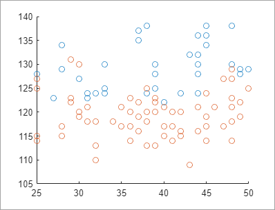
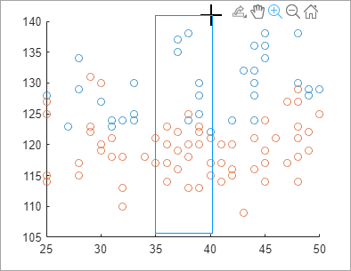
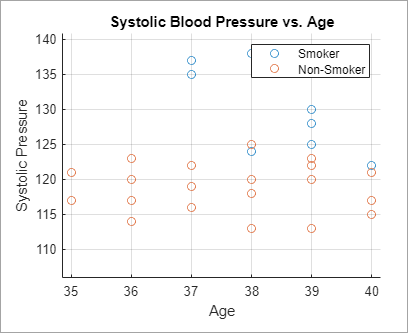
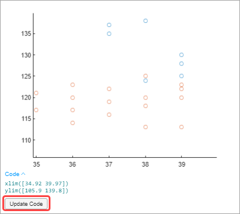

Modify Figures in Live Scripts
In the Live Editor, you can interactively modify figures in the output. Use the provided tools to explore data and add formatting and annotations to your figures. Then, update your code to reflect changes using the generated code.
Explore Data
You can interactively explore figures in the output using the toolbar that appears in the upper-right corner of the axes when you hover over a figure. The tools available depend on the contents of the axes, but typically include zooming, panning, rotating, exporting, and restoring the original view.
Zooming, panning, and rotating the axes let you explore different views of your data. By default, you can scroll or pinch to zoom into and out from the view of the axes. You also can drag to pan (2-D view) or drag to rotate (3-D view). Gesture-based interactions are not supported in R2018a and previous releases.
You can enable more interactions by clicking the zoom-in
 , zoom-out
, zoom-out  , pan
, pan  , and rotate
, and rotate  buttons in the axes toolbar. For example, click
the zoom-in button if you want to drag a rectangle to zoom into a region of
interest.
buttons in the axes toolbar. For example, click
the zoom-in button if you want to drag a rectangle to zoom into a region of
interest.
Note
When you open a saved live script, a blue information icon appears next to each output figure, indicating that the interactive tools are not available yet. To make these tools available, run the live script.
Suppose that you want to explore the health information of 100 patients. Create a
live script called patients_smoking.mlx and add code that loads
the data and adds a scatter plot that shows the systolic blood pressure of patients
that smoke versus patients that do not smoke, by age. Run the code by going to the
Live Editor tab and clicking Run
.
load patients figure scatter(Age(Smoker==1),Systolic(Smoker==1)); hold on scatter(Age(Smoker==0),Systolic(Smoker==0)); hold off

Explore the points where the patient is between 35 and 40 years old. Select the zoom-in button and drag a rectangle around the points between the 35 and 40 x-axis markers. The view zooms into the selected region.

Add Formatting and Annotations
In addition to exploring the data, you can format and annotate your figures interactively by adding titles, labels, legends, grid lines, arrows, and lines. To add an item, first select the desired figure. Then, go to the Figure tab and select one of the available options. To add a formatting or annotation option to your favorites, click the star at the top right of the desired annotation button.
This table describes the available formatting and annotation options.
| Option | Description |
|---|---|
Title | Add a title to the axes. To modify an existing title, click the existing title and enter the modified text. |
X-Label Y-Label Z-Label | Add a label to the axes. To modify an existing label, click the existing label and enter the modified text. |
Legend | Add a legend to the figure. To modify the existing legend descriptions, click the existing descriptions and enter the modified text. To remove the legend, select Remove Legend from the Figure tab. |
Colorbar | Add a colorbar legend to the figure. To remove the colorbar legend, select Remove Colorbar from the Figure tab. |
Grid X-Grid Y-Grid | Add grid lines to the axes. To remove all the grid lines from the axes, select Remove Grid from the Figure tab. |
Line Arrow Text Arrow Double Arrow | Add a line or arrow annotation to the figure. Draw the arrow from tail to head. To move an existing annotation, click the annotation to select it and drag it to the desired location. To remove the selected annotation, press the Delete key. |
For example, suppose that you want to add a title, axes labels, a legend, grid
lines, and an arrow annotation to the figure in
patients_smoking.mlx.
To add a title, go to the Figure tab, and select Title. A blue rectangle appears prompting you to enter text. Type the text
Systolic Blood Pressure vs. Ageand press Enter.To add axes labels, go to the Figure tab, and select X-Label. A blue rectangle appears prompting you to enter text. Type the text
Ageand press Enter. Select Y-Label. A blue rectangle appears prompting you to enter text. Type the textSystolic Pressureand press Enter.To add a legend, go to the Figure tab, and select Legend. A legend appears at the upper-right corner of the axes. Click the
data1description in the legend and replace the text withSmoking. Click thedata2description in the legend and replace the text withNon-Smoking. Press Enter.To add grid lines, go to the Figure tab, and select Grid. Grid lines appear in the axes.
To update the code, in the selected figure, click the Update Code button. The live script now contains the code needed to reproduce the figure changes.
grid on legend(["Smoker","Non-Smoker"]) title("Systolic Blood Pressure vs. Age") xlabel("Age") ylabel("Systolic Pressure")

Update Code with Figure Changes
When modifying output figures in live scripts, changes to the figure are not automatically added to the script. With each interaction, the Live Editor generates the code needed to reproduce the interactions and displays this code either underneath or to the right of the figure. Use the Update Code button to add the generated code to your script. This enables you to reproduce the interactions the next time you run the live script.
For example, in the live script patients_smoking.mlx, after
zooming in on patients between 35 and 40 years of age, click the Update
Code button.

MATLAB® adds the generated code for the interaction after the line containing the code for creating the plot.
xlim([34.92 39.97]) ylim([105.9 139.8])
Save and Print Figure
At any point during figure modification, you can choose to save or print the figure for future use.
To save the figure, click the Export button in the axes toolbar and select from the available options. For more information on saving figures, see Save Plot as Image or Vector Graphics File or Save Figure to Reopen in MATLAB Later.
To print the figure, click the Open in figure window button in the upper-right corner of the figure. This opens the figure in a separate figure window. Then, select File > Print. For more information on printing figures, see Print or Export Figure from Figure Toolstrip.
Note
Any changes made to the figure in the separate figure window are not reflected in the live script. Similarly, any changes made to the figure in the live script are not reflected in the open figure window.